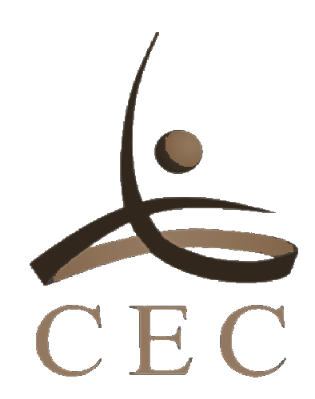
CECBuraydah · Al-Qassim
بريدة · القصيم
North Ablaq Estate
ضيعة الأبلق الشمالية
A private estate across 57,907 m² — Buraydah, Al-Qassim
ضيعة خاصة على مساحة ٥٧٫٩٠٧ م² — بريدة، القصيم
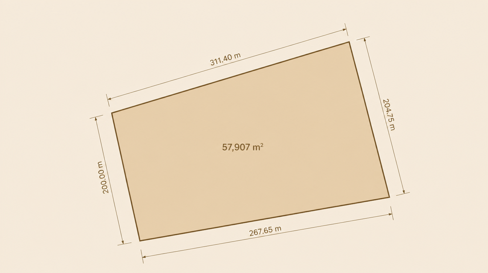


01 · The Site
57,907 m², surveyed and fenced — 200 m western frontage on a 20 m road, Buraydah, Al-Qassim.
٠١ · الموقع
٥٧٬٩٠٧ م²، مُساحة ومسوّرة — واجهة غربية ٢٠٠ م على طريق بعرض ٢٠ م، بريدة، القصيم.
02 · Concept
Mosque and majlis at the public edge; villa and chalets around the lake; stable, track, farm and workers’ ground held to the service side.
٠٢ · الفكرة
المسجد والمجلس عند الحافة العامة؛ الفيلا والشاليهات حول البحيرة؛ الإسطبل والميدان والمزرعة وسكن العمال في جهة الخدمة.
03 · Masterplan
Villa, guest wing and service court gathered around a single winding lagoon.
٠٣ · المخطّط العام
فيلا وجناح ضيوف وفناء خدمة تجتمع حول بحيرة واحدة متعرّجة.
04 · Aerial View
The estate assembled, walled, and standing quietly in the open desert.
٠٤ · منظر جوّي
الضيعة مكتملة ومسوّرة، تقف بهدوء في الصحراء المفتوحة.
Design Language
اللغة المعمارية
Serrated stepped parapets
A fine triangular crown that reads as shadow at noon.
شرفات مسنّنة متدرّجة
تاج مثلّثي رقيق يتحوّل إلى ظلّ في منتصف النهار.
Monumental gateway
One deep threshold sets the scale of the whole estate.
بوّابة ضخمة
عتبة واحدة عميقة تُحدّد مقياس الضيعة بأكملها.
Earthen stucco & white trim
Warm clay walls, edged in lime white — ablaq, restated.
طين مُلبّس وحواشٍ بيضاء
جدران طينية دافئة بحواشٍ من الجيرالأبيض — الأبلق بصياغة جديدة.
Triangular incised openings
Light enters as small, deliberate cuts in thick wall.
فتحات مثلّثة محفورة
يدخل الضوء عبر شقوق صغيرة مقصودة في الجدار السميك.
Masterplan & Components
المخطّط العام والمكوّنات
{{ gradientNote }}
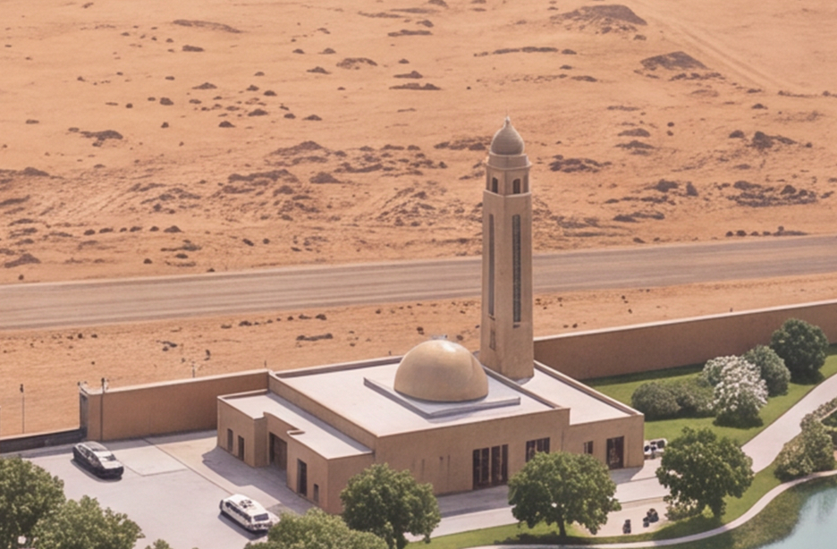
Mosque & Gateway
The public face: minaret, arrival court, one deep arch.
المسجد والبوّابة
الواجهة العامة: مئذنة وساحة وصول وقوس عميق واحد.
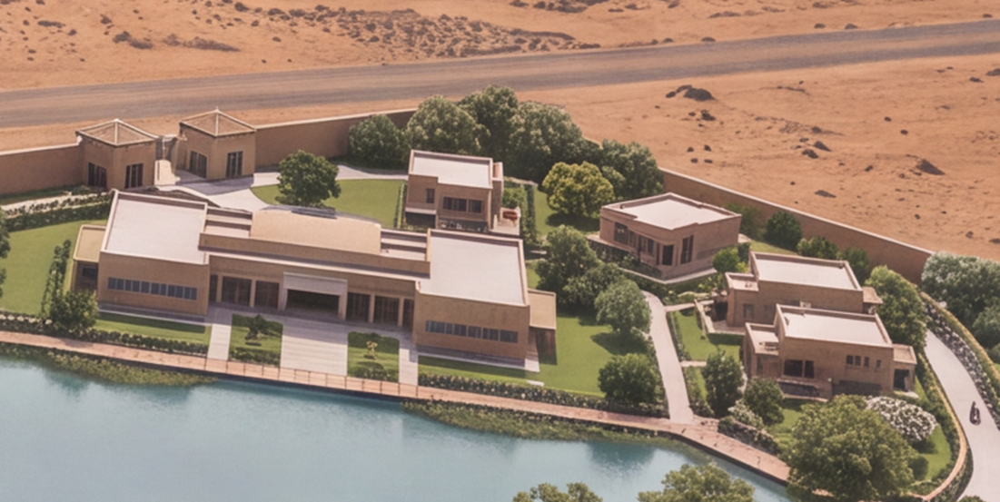
Villa
The private centre, held behind its own courtyard wall.
الفيلا
المركز الخاص، محجوب خلف جدار فنائه الخاص.
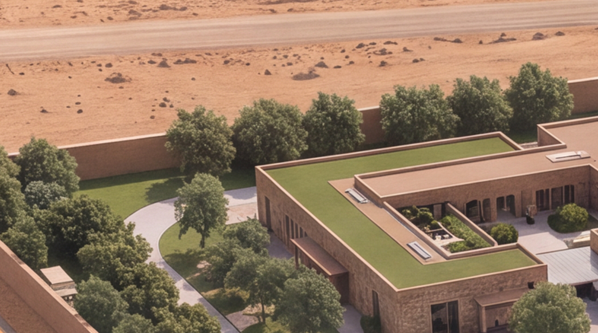
Chalet & Majlis
Guest ground — reception without entering the house.
الشاليه والمجلس
أرض الضيافة — استقبال دون الدخول إلى البيت.
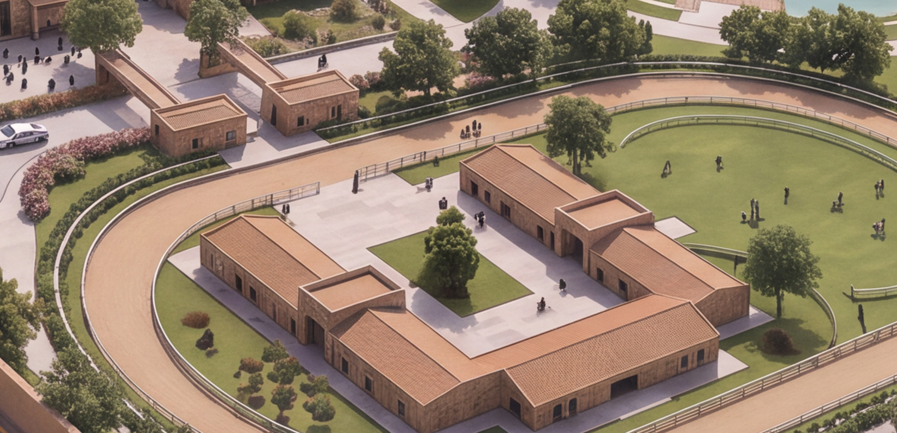
Stable & Paddock
Eastern edge: shaded rows opening onto sand.
الإسطبل والميدان
الحدّ الشرقي: صفوف مظلّلة تنفتح على الرمل.
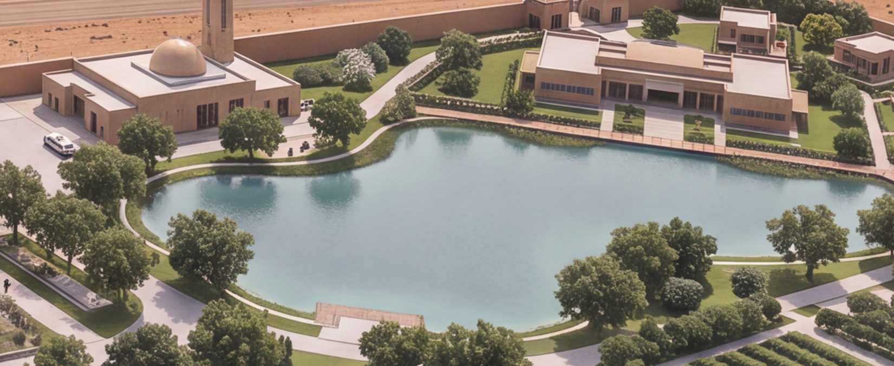
Lagoon & Courts
Water and play at the innermost, most sheltered zone.
البحيرة والملاعب
الماء واللعب في أكثر المناطق داخليةً وحماية.
Material & Detail
Earthen stucco, stepped parapets, incised triangles and warm concealed light — the palette every surface of the estate is drawn from.
المادة والتفصيل
طين مُلبّس، وشرفات متدرّجة، ومثلّثات محفورة، وضوء دافئ مخفي — لوحة المواد التي تُشتق منها كل أسطح الضيعة.
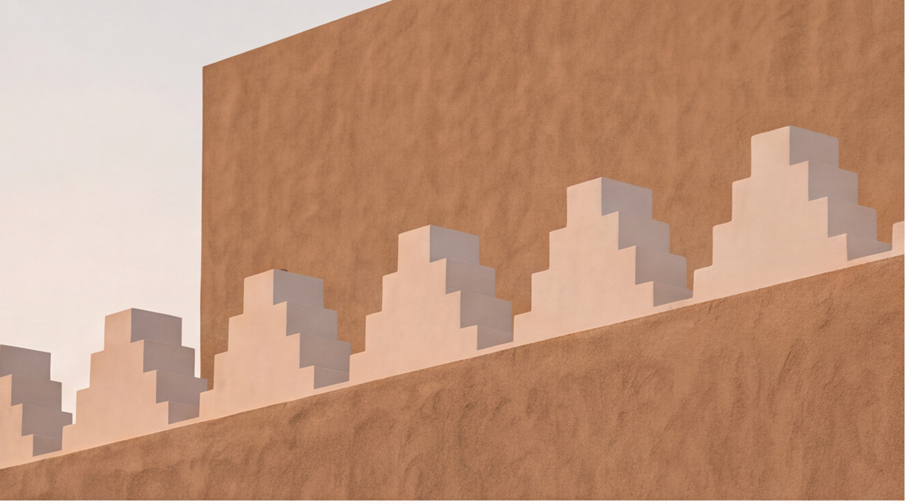
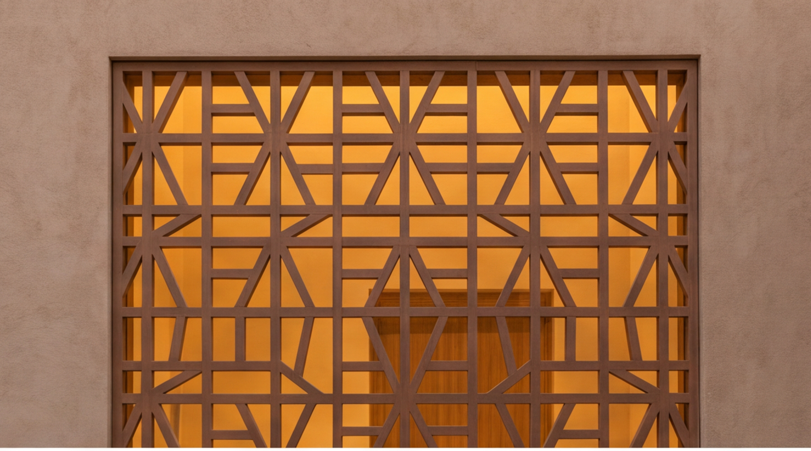
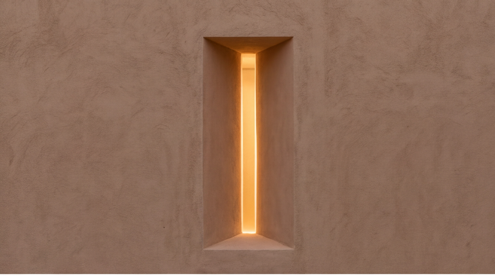
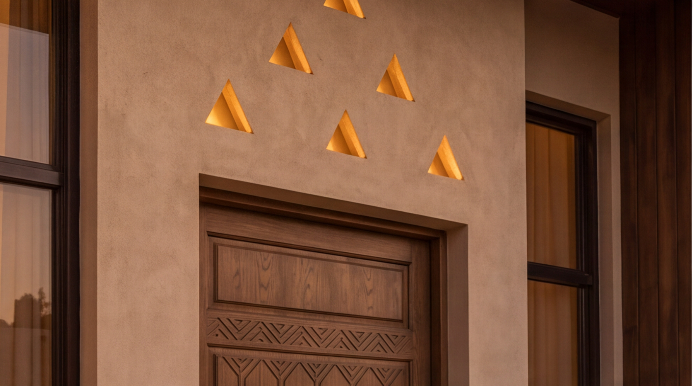
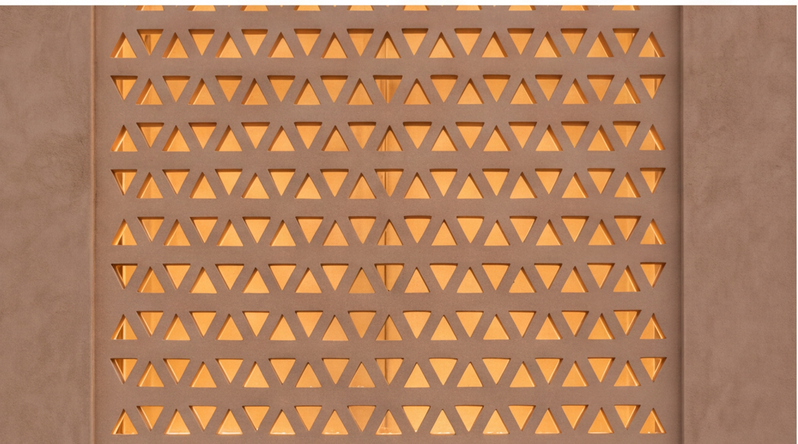
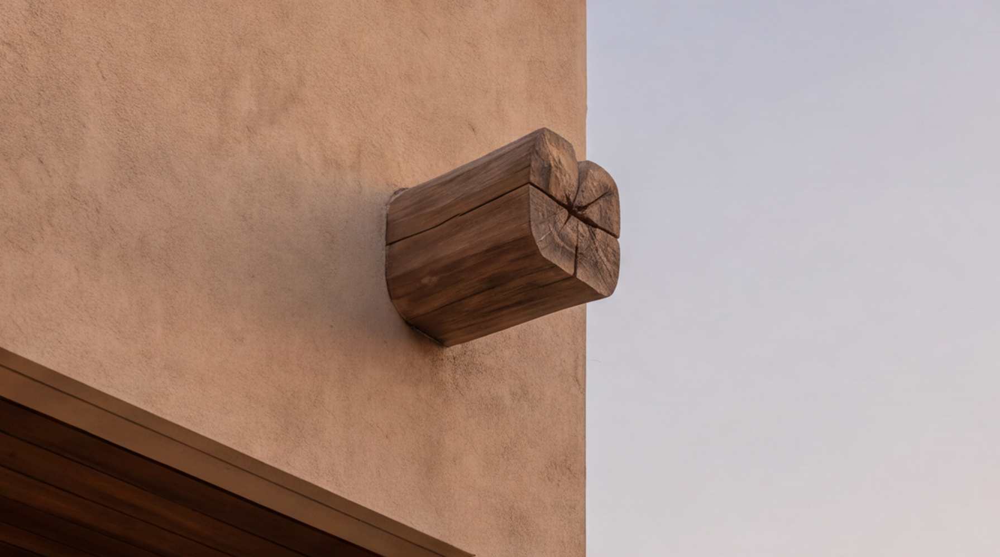
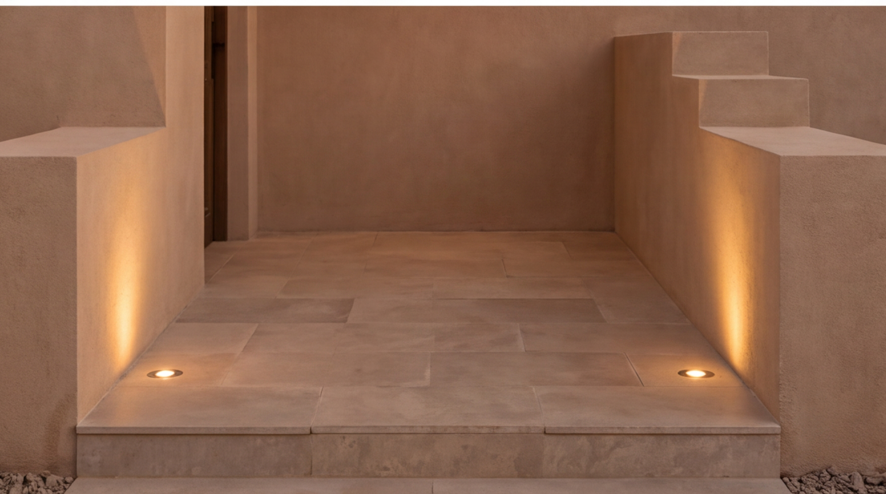
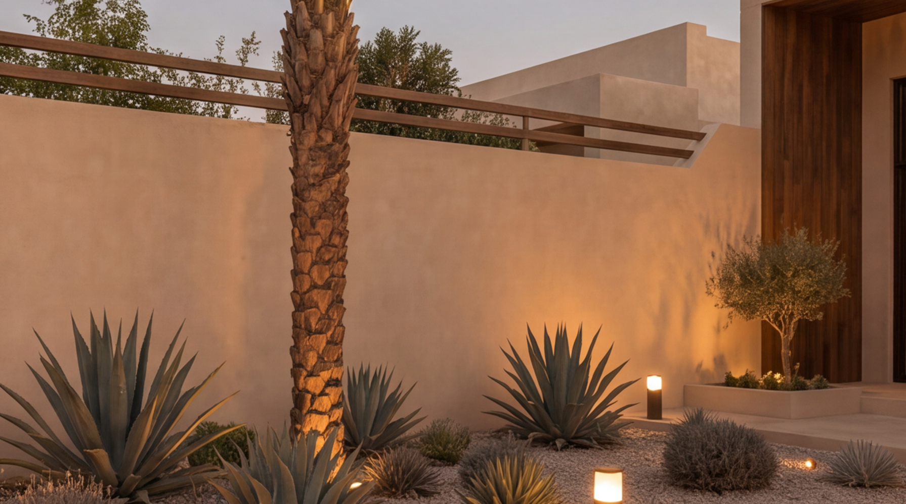
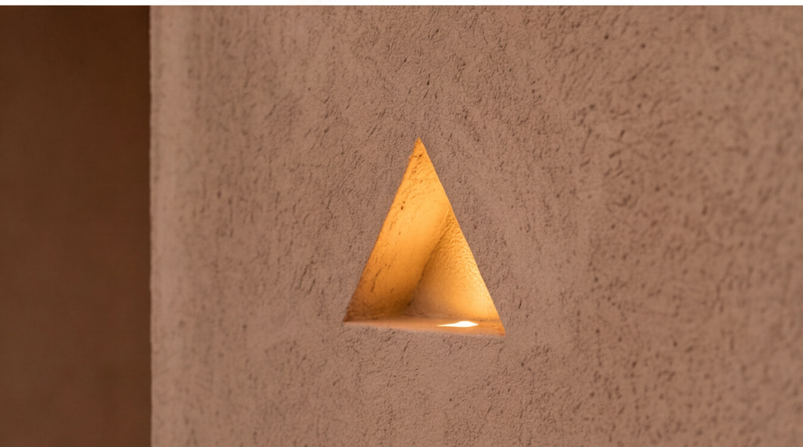
Land held quietly, built with intention.
أرض تُصان بهدوء، وتُبنى بقصد.
North Ablaq Estate · Buraydah, Al-Qassim · 57,907 m²